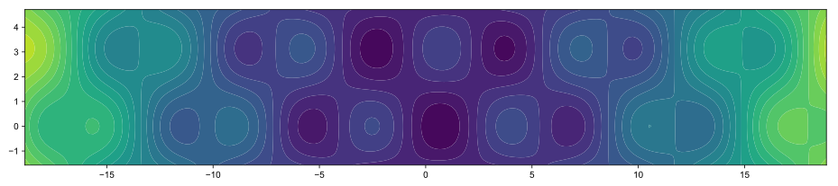
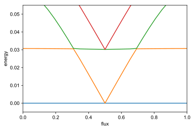
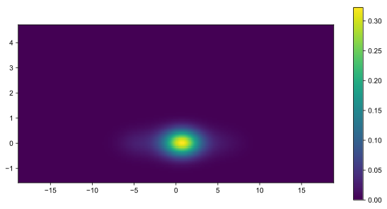
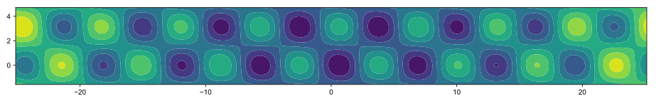
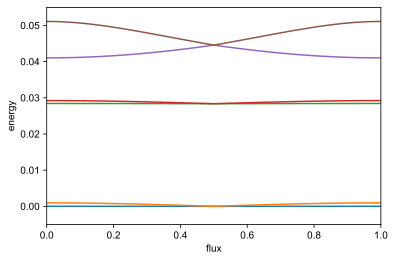
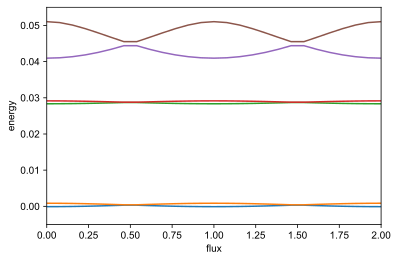

Initialization¶
Interactive use of the sc_qubits library from a jupyter notebook starts with importing the sc_qubits library. Additional imports, e.g., numpy and the QuTiP library are optional.
[1]:
%matplotlib inline
%config InlineBackend.figure_format = 'svg'
import sys
sys.path.insert(0, r"C:\Users\drjen\Dropbox\shared_on_memon\python\sc_qubits package")
import sc_qubits as qubit
import sc_qubits.utils.plotting as plot
import numpy as np
from qutip import *
C:\Users\drjen\Miniconda3\envs\py35\lib\site-packages\h5py\__init__.py:36: FutureWarning: Conversion of the second argument of issubdtype from `float` to `np.floating` is deprecated. In future, it will be treated as `np.float64 == np.dtype(float).type`.
from ._conv import register_converters as _register_converters
0-pi qubit without disorder¶
\(H_\text{sym}=-2E_\text{CJ}\partial_\phi^2+2E_{\text{C}\Sigma}(i\partial_\theta-n_g)^2-2E_\text{J}\cos\theta\cos(\phi-\varphi_\text{ext}/2)+E_L\phi^2+2E_\text{J}\)
[2]:
# parameters for the 0-\pi circuit
phi_grid = qubit.Grid1d(-6*np.pi, 6*np.pi, 200)
zero_pi = qubit.ZeroPi(
grid = phi_grid,
EJ = 0.25,
EL = 10.0**(-2),
ECJ = 0.5,
EC = None,
ECS = 10.0**(-3),
ng = 0.1,
flux = 0.23,
ncut = 30
)
[3]:
zero_pi
[3]:
0-Pi qubit without EL and EC disorder, no coupling to zeta mode
———— PARAMETERS ————
dCJ : 0
ng : 0.1
grid : Grid (1d) ......
max_val : 18.84955592153876
min_val : -18.84955592153876
pt_count : 200
EL : 0.01
EC : 0.001002029426686961
truncated_dim : None
ncut : 30
dEJ : 0
EJ : 0.2531645569620253
ECJ : 0.4937500000000001
flux : 0.23
Hilbert space dimension : 12200
Potential energy for symmetric 0-\(\pi\) qubit¶
[4]:
zero_pi.plot_potential(contour_vals=np.linspace(0,5,25), aspect_ratio=0.2)

Eigenenergies¶
[5]:
zero_pi.flux = 0.23
evals = zero_pi.eigenvals()
[6]:
evals
[6]:
array([0.46013402, 0.49073909, 0.5024677 , 0.51986416, 0.53153435,
0.54722838])
[7]:
flux_list = np.linspace(0, 1, 27)
%time zero_pi.plot_evals_vs_paramvals('flux', flux_list, subtract_ground=True, yrange=[-0.005,0.055])
[====================] 100% Done.

Wall time: 36.8 s
[7]:
(<Figure size 432x288 with 1 Axes>,
<matplotlib.axes._subplots.AxesSubplot at 0x1eabd6835f8>)
[8]:
esys = zero_pi.eigensys()
zero_pi.plot_wavefunction(esys, which=0, mode='abs')
[8]:
(<Figure size 720x360 with 2 Axes>,
<matplotlib.axes._subplots.AxesSubplot at 0x270c88847b8>)

0-pi qubit with disorder in EJ and ECJ (zeta-mode remains decoupled)¶
\(H = H_\text{sym} +2E_{C\Sigma}dC_J\,\partial_\phi\partial_\theta + E_J dE_J \sin\theta\sin(\phi-\phi_\text{ext}/2)\)
[8]:
phi_grid = qubit.Grid1d(-8*np.pi, 8*np.pi, 200)
# parameters
EJ_CONST = 1/3.95
zeropi_dis = qubit.ZeroPi(
grid = phi_grid,
ncut = 30,
EJ = EJ_CONST,
dEJ = 0.1,
EL = 10.0**(-3),
ECJ = 1 / (8.0*EJ_CONST),
dCJ = 0.1,
ECS = 10.0**(-3),
EC = None,
ng = 0.3,
flux = 0.2
)
[9]:
zeropi_dis
[9]:
0-Pi qubit without EL and EC disorder, no coupling to zeta mode
———— PARAMETERS ————
dCJ : 0.1
ng : 0.3
grid : Grid (1d) ......
max_val : 25.132741228718345
min_val : -25.132741228718345
pt_count : 200
EL : 0.001
EC : 0.001002029426686961
truncated_dim : None
ncut : 30
dEJ : 0.1
EJ : 0.2531645569620253
ECJ : 0.4937500000000001
flux : 0.2
Hilbert space dimension : 12200
[10]:
zeropi_dis.plot_potential(contour_vals=np.linspace(0,1.63,10))

[11]:
evals = zeropi_dis.eigenvals()
print(evals)
[0.42778386 0.42854964 0.45620118 0.45685018 0.46941385 0.47730651]
[5]:
flux_list = np.linspace(0, 1, 27)
# %prun zero_pi.plot_evals_vs_paramvals('flux', flux_list, subtract_ground=True, yrange=[-0.005,0.055])
%time zeropi_dis.plot_evals_vs_paramvals('flux', flux_list, subtract_ground=True, yrange=[-0.005,0.055])
[====================] 100% Done.

Wall time: 41.7 s
[5]:
(<Figure size 432x288 with 1 Axes>,
<matplotlib.axes._subplots.AxesSubplot at 0x1ba3adf9470>)
[40]:
_, evecs = zeropi_dis.eigensys(evals_count=2)
evecs_calculated = evecs.T[1][4000:4100]
[41]:
flux_list = np.linspace(0, 2, 27)
zeropi_dis.plot_evals_vs_paramvals('flux', flux_list, shift=-evals[0], yrange=[-0.005,0.055], filename="./data/0pi_dis_E_vs_flux")
[====================] 100% Done.

[41]:
(<Figure size 432x288 with 1 Axes>,
<matplotlib.axes._subplots.AxesSubplot at 0x1ba404dba90>)
[42]:
esys = zeropi_dis.eigensys()
zeropi_dis.plot_wavefunction(esys, which=0, mode='abs')
[42]:
(<Figure size 1440x720 with 2 Axes>,
<matplotlib.axes._subplots.AxesSubplot at 0x1ba3d8a8668>)